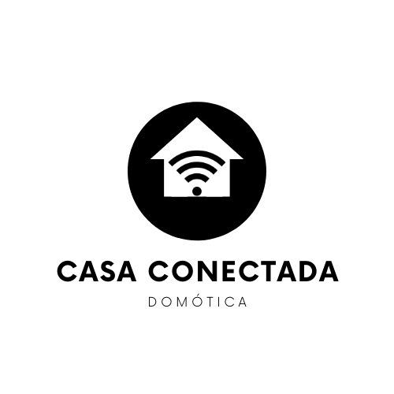

La Tienda
|  | Casa Conectada es una tienda online de dispositivos inteligentes principalmente inalámbricos y enfocados en conseguir un catálogo que sea de bajo coste.
Es una iniciativa por parte de un grupo de personas aficionados a la domótica y que quiere transmitir soluciones sencillas para actualizar los hogares de hoy en día. Además la domótica sirve de gran ayuda a personas invidentes o con discapacidad y que simplemente con un comando de voz puedan controlar elementos tecnológicos de su casa sin tener que ponerse de pie y activarlos manualmente. No es solo un tema de modernidad o de lujo, es también una manera de controlar el gasto energético de la casa, de crear versatilidad de los espacios creando escenas personalizadas de acuerdo al gusto del consumidor. |
Cada día es más común que tengamos en casa dispositivos inteligentes como por ejemplo bombillas, asistentes con altavoces (google assistant/alexa/siri), sensores de termostato, enchufes, botones de activación, cerraduras, apretadores de botones, sensores de puerta abierta, sensores de movimiento, etc. Además, cada vez más existen electrodomésticos que se conectan a internet como neveras, lavadoras, lavavajillas, etc. En el pasado un proyecto de domótica para el hogar era sinónimo de lujo y no cualquier persona podía acceder a este tipo de tecnología, era complicado de hacer, implicaba muchos cables que había que esconder, además una vez que los aparatos se hacían viejos era muy complicado cambiarlos y actualizarlos. Pensar en domótica implicaba siempre hacer una obra en casa y los costes se disparaban. Actualmente vivimos en un mundo digitalizado, donde cada vez todo es inalámbrico, existen soluciones de bajo coste para automatizar los elementos tecnológicos de casa y es una oportunidad para mucha gente a la que llama la atención la domótica y que la reducción de costes sea prioridad.